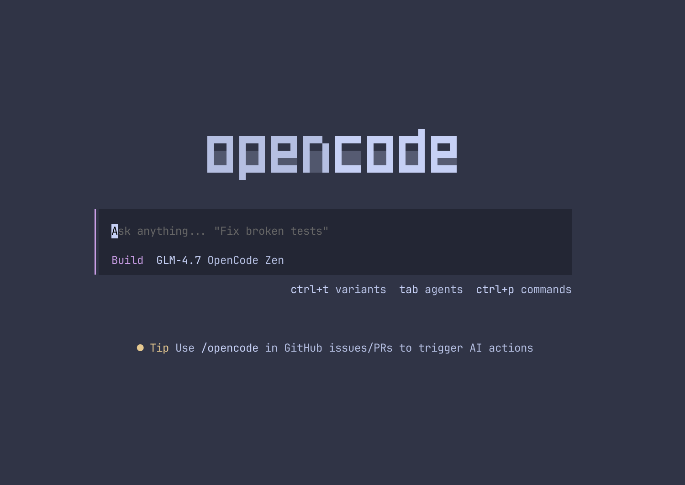

第一章：什么是 OpenCode？ —— 你的超级 AI 实习生
欢迎来到 AI 编程的新时代。如果你觉得自己“不会写代码”，或者只会“一点点代码”，那么 OpenCode 正是为你准备的。
1. 一个懂项目、会干活的“实习生”
你可能听说过 ChatGPT 或者 GitHub Copilot。它们就像是一个博学的翻译官，你问它问题，它给你一段代码。
而 OpenCode 是一名为你工作的“超级实习生”。
🤖 普通 AI (如 ChatGPT)
你给它需求，它给你建议。你需要自己复制、粘贴、测试。
就像一个“军师”，只出主意不干活。
🧠 OpenCode 智能体
你给它需求，它自己翻看项目、修改代码、运行程序、修复错误。
就像一个“实习生”，直接帮你把活干完。
2. 为什么“普通人”也需要它？
OpenCode 的强大之处在于它极大地降低了编程的门槛：
- 拒绝“面对黑盒”：它能帮你阅读和解释别人的代码，告诉你这段程序到底在做什么。
- 说人话办实事：你只需要说“帮我把这个网页的背景改成浅蓝色”，它就会自动找到对应的 CSS 文件并修改。
- 自动查错：如果你写错了，它能通过报错信息自动分析原因并给出修复方案。
3. 它长什么样？

OpenCode 典型的对话工作界面
虽然它运行在命令行（Terminal）中，听起来很“程序员”，但实际上它的交互逻辑非常自然。你只需像平时聊天一样跟它说话即可。
4. 你需要准备什么？
-
一颗敢于尝试的心
别被“代码”这两个字吓跑，有了 AI 辅助，编程更像是一场对话。 -
一个 LLM 的 API Key
这是 AI 的“大脑租金”。- 👉 国内用户：首选 DeepSeek (极便宜，国产最强)
- 👉 追求极致：首选 Claude 3.5 Sonnet (目前最聪明的 AI)
💡 记住这一条
OpenCode 不是要取代你，而是要给你配一个全天候待命的代码助手。你负责“出主意”，它负责“撸代码”。